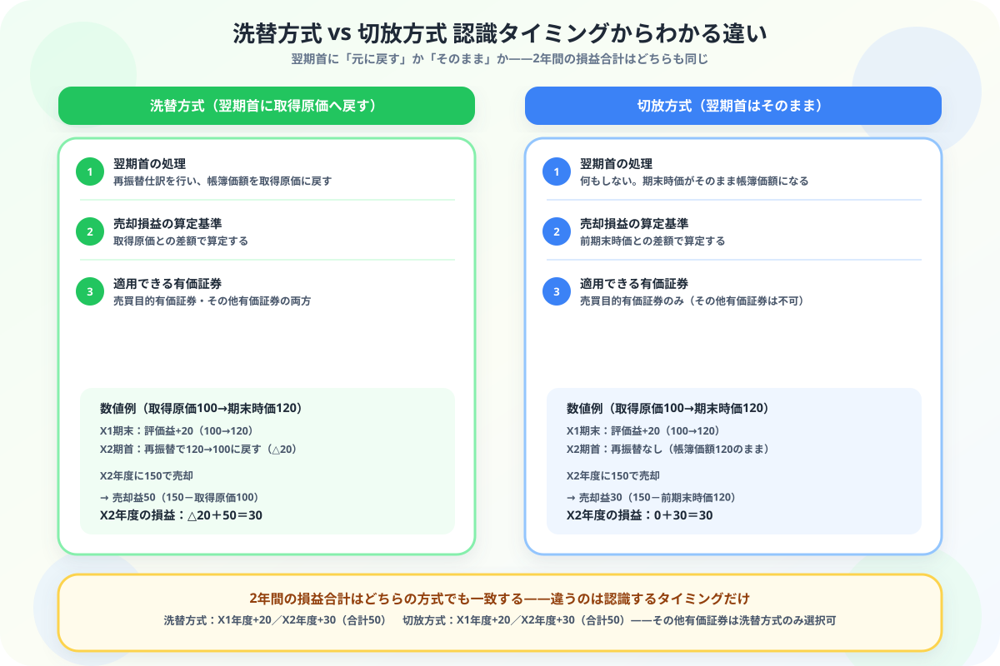

有価証券の洗替方式と切放方式の違いがわからない人へ
タイミングからスッキリ整理する図解ガイド
この記事でわかること（5秒まとめ）
- どちらも売買目的有価証券の翌期の会計処理方法——名前が似ていて混同しやすい
- 本質の違いは翌期首の処理——洗替方式は「取得原価に戻す」、切放方式は「そのまま」
- その他有価証券は洗替方式のみ選択可能——切放方式は売買目的有価証券だけの選択肢
- 2年間の損益合計はどちらも一致する——違うのは認識するタイミングだけ
大谷 一輝 より
こんにちは、大谷です！
有価証券の期末評価をなんとか乗り越えたと思ったら、次に「洗替方式」「切放方式」という、見るからに似た名前の2つが出てきて「え、名前も紛らわしいし、結局何が違うの……」と固まった記憶があります。しかも「どっちを使っても最終的な損益は同じ」と教科書に書いてあって、余計に「じゃあ何のために2つもあるの？」と混乱しました。
でも実は、違いはたった1つ。「翌期の最初に、帳簿価額を元に戻すか、そのままにするか」——これだけです。今日はこのシンプルな軸を、一緒に整理していきましょう！
また、記事の末尾のほうにある【いいねボタン】をポチッと押してもらえると、めちゃくちゃ嬉しいです！
受験生
洗替方式と切放方式、名前も似てるし、どっちがどっちの処理か毎回ごちゃごちゃになります……。しかも「どちらでも損益は同じ」って言われると、余計に違いがわからなくなります。
大谷（簿記1級勉強中）
その感覚、よくわかります！見るポイントは「翌期の最初に何をするか」だけです。洗替方式は、名前の通り翌期首に「洗い替える」——つまり評価替えをいったんリセットして、帳簿価額を取得原価に戻します。切放方式は「切り放す」——前期末の時価をそのまま翌期に持ち越して、何もしません。
受験生
なるほど、「戻すか、そのままか」なんですね！でも最終的な損益が同じなら、どっちを使っても同じじゃないんですか？
大谷（簿記1級勉強中）
結果は同じでも、「いつ損益として計上するか」のタイミングが違うんです。評価替えの時点でしっかり損益を認識したいなら切放方式、いったんリセットして売却時にまとめて損益を出したいなら洗替方式、というイメージです。試験ではどちらの方式を使うか問題文に指示があるので、判断に迷う必要はありません。仕組みを理解しておくことが大切です。
❓ 翌期首の処理の違い——「元に戻すか」「そのままか」
洗替方式と切放方式は、どちらも売買目的有価証券を期末に時価評価した後、翌期の会計処理として選べる2つの方法です。違いは、翌期の最初に何をするかにあります。
翌期首に元へ戻す
洗替方式（あらいがえほうしき）
→ 再振替仕訳で取得原価に戻す
期末の評価替え仕訳を、翌期首に逆仕訳して取り消す。帳簿価額は取得原価に戻る。
翌期首はそのまま
切放方式（きりはなしほうしき）
→ 何もせず期末時価を引き継ぐ
翌期首に仕訳は不要。期末の時価評価額が、そのまま翌期の帳簿価額になる。

📝 ① 洗替方式の仕訳の流れ
前提
売買目的有価証券（取得原価100円）をX1年度末に時価120円で評価し、X2年度に150円で売却した。
| タイミング | 借方 | 金額 | 貸方 | 金額 |
|---|---|---|---|---|
| X1年度末（評価替え） | 売買目的有価証券 | 20 | 有価証券評価益 | 20 |
| X2年度首（再振替） | 有価証券評価損 | 20 | 売買目的有価証券 | 20 |
| X2年度（売却） | 現金など | 150 | 売買目的有価証券 | 100 |
| 有価証券売却益 | 50 |
ポイント：再振替仕訳で帳簿価額が取得原価100円に戻っているため、売却時の売却益は「150－100＝50」で計算します。X2年度の損益合計は「△20（再振替）＋50（売却益）＝30」です。
💰 ② 切放方式の仕訳の流れ
| タイミング | 借方 | 金額 | 貸方 | 金額 |
|---|---|---|---|---|
| X1年度末（評価替え） | 売買目的有価証券 | 20 | 有価証券評価益 | 20 |
| X2年度首 | 仕訳なし（帳簿価額120円のまま） | |||
| X2年度（売却） | 現金など | 150 | 売買目的有価証券 | 120 |
| 有価証券売却益 | 30 | |||
ポイント：翌期首に仕訳がないため、帳簿価額は前期末時価の120円のまま。売却益は「150－120＝30」で計算します。X2年度の損益は「0（期首）＋30（売却益）＝30」——洗替方式のX2年度の損益（30）と一致します。
検算のコツ：X1年度の評価益20円はどちらの方式でも同じです。2年間の損益合計は、洗替方式・切放方式ともに「20＋30＝50円」で一致します。認識するタイミングが違うだけで、最終的な儲けの金額は変わりません。
🔍 ③ 適用できる有価証券の違い——その他有価証券は洗替方式のみ
| 有価証券の種類 | 洗替方式 | 切放方式 |
|---|---|---|
| 売買目的有価証券 | 選択できる | 選択できる |
| その他有価証券 | 選択できる（というより必須） | 選択できない |
その他有価証券に切放方式は使えない：その他有価証券は原則として翌期首に洗い替える処理が必要で、切放方式は認められていません。問題文で「その他有価証券」と出てきたら、自動的に洗替方式だと判断できます。
📋 まとめ：洗替方式 vs 切放方式 早見表
翌期首の処理洗替＝再振替で取得原価に戻す／切放＝何もしない
売却損益の算定基準洗替＝取得原価との差額／切放＝前期末時価との差額
適用できる有価証券洗替＝売買目的・その他両方／切放＝売買目的のみ
2年間の損益合計どちらの方式でも一致する
🔄
「翌期首に戻すか、そのままか」——この1点で洗替方式と切放方式はもう混同しません
名前が似ていて身構えてしまう論点ですが、着目点はたった1つでした。この記事が「あ、そういうことか！」につながったら、僕の執筆のモチベーション維持のために、この下にある【いいねボタン】をポチッと押してもらえると、めちゃくちゃ嬉しいです！
Study Questで今日の学習時間を記録して、簿記2級マスターへの一歩を刻んでおきましょう。